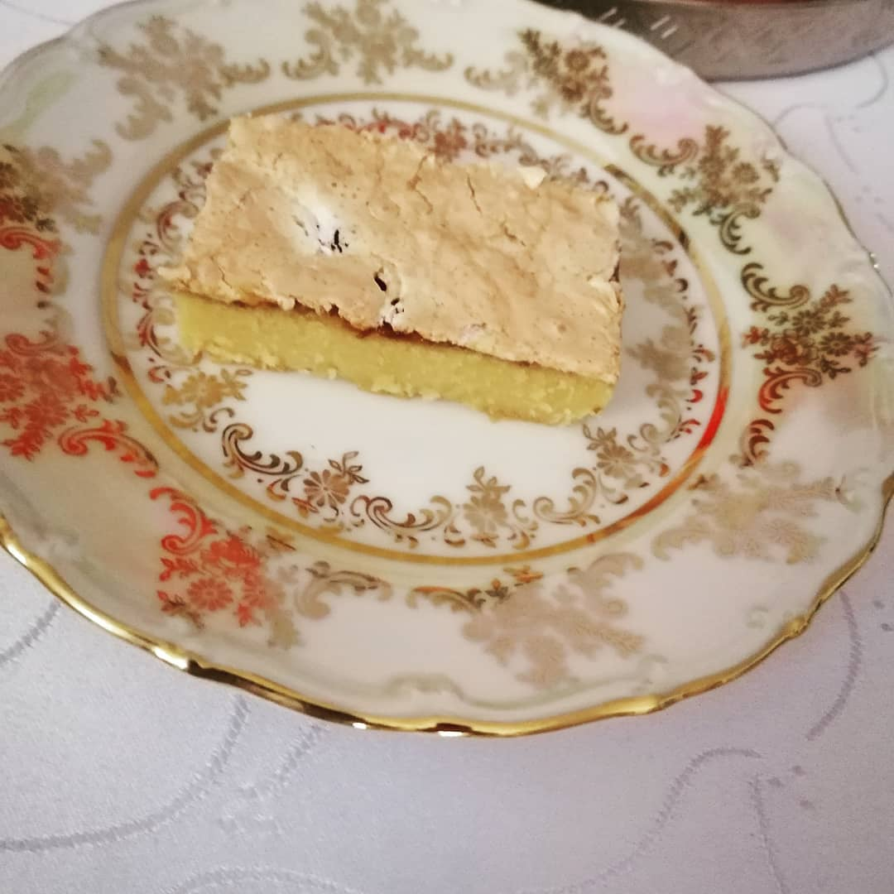

Piškotové rezy podľa @zatulana_v_knihach — Normy Jedál
Piškótové rezy s droždím
20Dg masla, 10Dg práškového cukru, 4 žĺtky, 2Dg droždia, 500ml mlieka a 35 Dg krupicovej múky.
Žĺtky, maslo a cukor dobre vymiešame do spenenia. V mlieku necháme vykysnúť droždie a nalejeme ho do vymiešaného cesta. Pridáme múku a všetko spolu zľahka zamiešame. Cesto vylejeme na vymastený a múkou vysypaný plech a pečieme v teplej rúre. Nedopečené cesto vyberieme, natrieme lekvárom a dobre ušľahaným snehom, do ktorého sme zašľahali práškový cukor, a dáme naspäť do rúry dopiecť. Po upečení a vychladnutí pokrájame.
Plnka
Lekvár, 4 bielky a 10Dg práškového cukru
Bielky ušľaháme, pridáme cukor a znova prešľaháme.
#piskotoverezy #sdrozdim #milujempecenie #sladkosk #dneapeciem #vkuchyni #uzasnejedlo #mnam #dnesjem #dnesjim #jidlo #jedlo #mnamka #peciem #peciemslaskou #slaskou #slaskoupeceneko #sweet